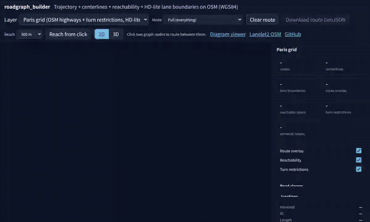

Redirecting to the interactive map console in a few seconds. If nothing happens, use the buttons below.
Open 2D / 3D map console Diagram viewer + route diagnostics

highway + nodes by junction type (T / Y / crossroads /
X / complex / through-or-corner / dead-end).
no_* / only_*) and turn-restriction
markers. Paris n312 → n191 is 909 m with restrictions vs
878 m without.
Source on
GitHub.
The same console is served by cd docs && python3 -m
http.server 8765. OSM-derived assets are attributed under
ODbL 1.0.